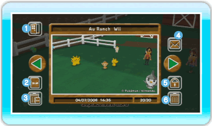
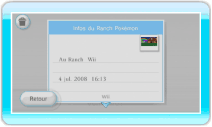

20 |
Album |
 |
Vous pouvez afficher les photos que vous avez prises au Ranch ou les envoyer sur le bureau Wii. L’Album peut contenir jusqu’à 20 photos. Vous avez aussi la possibilité de les sauvegarder sur une carte SD. Note: si vous prenez plus de 20 photos, les plus anciennes sont automatiquement effacées. ● Accéder à l’Album Lorsque vous sélectionnez Album dans le menu principal, l’écran de l’Album s’affiche. Pour afficher la photo suivante ou précédente, placez le curseur sur l’une des flèches vertes et appuyez sur  Retour
Quittez l’écran de l’Album. Sauvegarder sur une carte SD
Sauvegardez les photos de My Pokémon Ranch sur une carte SD. Notes: les photos sauvegardées sur une carte SD le sont au format jpeg. Elles ne peuvent pas être renvoyées dans l’Album, mais vous pouvez les visualiser sur la chaîne photos de votre Wii ou sur votre ordinateur. Les droits de copyright de toutes les photos prises dans My Pokémon Ranch appartiennent à The Pokémon Company et aux autres parties. Veillez à les utiliser conformément aux lois sur le copyright! Effacer toutes les photos de la carte SD
Effacez toutes les photos de My Pokémon Ranch qui sont sauvegardées sur la carte SD. 
Envoyer sur le bureau Wii
Vous pouvez envoyer puis regarder vos photos sur le bureau Wii. Protéger/Déprotéger
Vous pouvez activer ou désactiver la protection d’une photo. Une photo protégée ne peut pas être effacée. Vous pouvez protéger jusqu’à 19 photos. Effacer
Vous pouvez effacer la photo actuellement affichée.
|
 . Vous pouvez également appuyer sur gauche/droite sur
. Vous pouvez également appuyer sur gauche/droite sur  ou sur
ou sur  /
/ .
. |
 |
 |